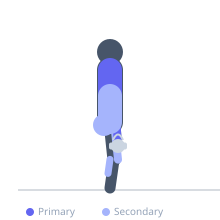
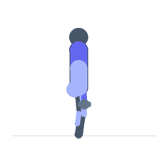

Exercise guide / Farmer's Walk / Farmer's Carry
Farmer's Walk / Farmer's Carry
The farmer's walk involves gripping a heavy implement in each hand — typically farmer's walk handles, dumbbells, or kettlebells — and walking a prescribed distance under that loaded bilateral carry. It simultaneously trains grip strength, trapezius endurance, core anti-lateral flexion stability, and cardiovascular capacity, making it one of the most efficient total-body strength and conditioning exercises available. The bilateral loaded carry pattern has direct functional carryover to any task requiring the transport of heavy objects.
Primary muscles
trapezius upper
flexor carpi radialis
flexor carpi ulnaris
Secondary muscles
erector spinae
vastus lateralis
gluteus maximus
gastrocnemius medial
Stabilizers
internal oblique
external oblique
transverse abdominis
Equipment
Dumbbell (Fixed)
Optional
Kettlebell


Starting position
- The implements are placed on the floor on either side of the body. Stand between them in an athletic stance. Hinge at the hips and grip one implement in each hand.
Setup
- Choose a weight that allows an upright walking posture — if the torso is visibly leaning laterally, the weight is too heavy. For farmer's walk handles (competition equipment), load plates evenly on both sides.
Steps
- Step 1: Deadlift both implements from the floor simultaneously. Stand tall with the implements hanging at the sides.
- Step 2: Brace the core, retract the shoulder blades, and begin walking with controlled, quick steps.
- Step 3: Maintain an upright torso throughout the walk. Resist lateral lean from the weight.
- Step 4: Keep the gaze forward and walk at a brisk pace for the target distance.
- Step 5: At the end of the distance, slow down, then hinge at the hips to lower the implements to the floor safely.
Coaching cues
- Stand tall — imagine a rod through the spine
- Quick feet, not big strides
- Crush the handles and retract the shoulder blades
Breathing
- Breathe short and regularly throughout the carry. Do not hold the breath for extended durations — take controlled breaths every 2–3 steps.
Range of motion
- Walk 20–50 metres per set for training. Competition distances vary (15–25 metres for single lengths). Grip the implement firmly throughout.
Tempo
- Strength carry: 20–30m × 4–6 sets at heavy load. Conditioning carry: 40–60m at moderate load × 4–6 sets. Rest 90–120 seconds between sets.
Common mistakes
- Letting the shoulders round forward and down, which loses trap tension and can strain the shoulder girdle
- Walking with long, slow strides — shorter, quicker steps are more stable and efficient
- Looking down, which causes spinal flexion and balance disruption
Safety
- If the grip fails during the walk, let the implements drop to the sides — do not attempt to catch them awkwardly
- Clear the walking path before beginning — trip hazards are especially dangerous under heavy bilateral loading
Training
- strength: 1–4 reps
- endurance: 2–6 reps
- strength: 4–6 sets
- endurance: 3–5 sets
- Rest: {'strength': 180, 'endurance': 90}